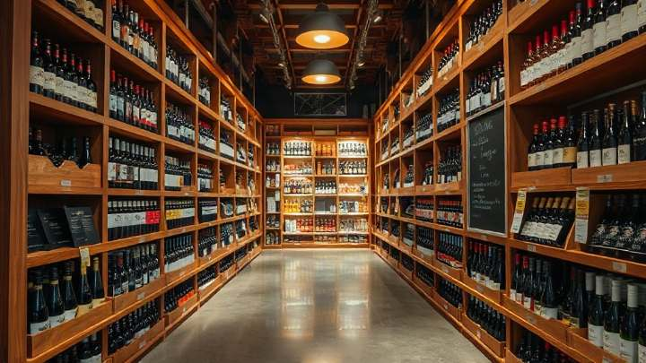
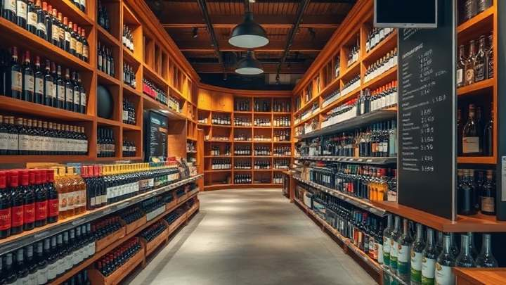

Type 47 · On-Sale General, Eating Place
SF-1001
$350,000
View SF-1001San Francisco County · 30 licenses on the book
All 30 licenses we hold here, asking $15,000 to $350,000 — the license alone, with no premises, no fixtures and no goodwill. Every one is priced, dated and on its own page, and all six license classes are linked below. San Francisco is a consolidated city and county, so this is the whole jurisdiction: there is no separate city page and no separate county page to choose between.
Available now
San Francisco is a consolidated city and county, so there is no separate city license and county license to choose between — one jurisdiction covers all 47 square miles of it, and every license below is transferable anywhere inside that boundary. Every one of the 30 is listed below, each on its own page, with its license class, its asking price, how long it has been on the market and whether it is still open.
What no page on this site shows is the license number, the licensee, or the premises address. Those are released to a qualified buyer under a non-disclosure agreement, once we have established that a purchase is real — because a license in transfer is a live business, and publishing which one it is costs the seller money. If an entry looks right, open it and ask us from there, and we will take you through what sits behind it.
Every entry below is one license at its own address — open it, link to it or send it on without sending the whole book. Each one is the license alone: no premises, no lease, no fixtures, no kitchen, no goodwill, no stock. The six class pages are linked further down.
Showing 30 of 30 licenses
Type 47 · On-Sale General, Eating Place
$350,000
View SF-1001Type 47 · On-Sale General, Eating Place
$330,000
View SF-1002Type 47 · On-Sale General, Eating Place
$315,000
View SF-1003Type 47 · On-Sale General, Eating Place
$300,000
View SF-1004Type 47 · On-Sale General, Eating Place
$285,000
View SF-1005Type 21 · Off-Sale General
$275,000
View SF-2001Type 47 · On-Sale General, Eating Place
$270,000
View SF-1006Type 47 · On-Sale General, Eating Place
$260,000
View SF-1007Type 48 · On-Sale General, Public Premises
$260,000
View SF-3001Type 47 · On-Sale General, Eating Place
$250,000
View SF-1008Type 21 · Off-Sale General
$250,000
View SF-2002Type 47 · On-Sale General, Eating Place
$240,000
View SF-1009Type 47 · On-Sale General, Eating Place
$225,000
View SF-1010Type 21 · Off-Sale General
$225,000
View SF-2003Type 47 · On-Sale General, Eating Place
$205,000
View SF-1011Type 21 · Off-Sale General
$205,000
View SF-2004Type 47 · On-Sale General, Eating Place
$200,000
View SF-1012Type 47 · On-Sale General, Eating Place
$195,000
View SF-1013Type 47 · On-Sale General, Eating Place
$185,000
View SF-1014Type 21 · Off-Sale General
$185,000
View SF-2005Type 47 · On-Sale General, Eating Place
$175,000
View SF-1015Type 21 · Off-Sale General
$165,000
View SF-2006Type 47 · On-Sale General, Eating Place
$160,000
View SF-1016Type 47 · On-Sale General, Eating Place
$148,000
View SF-1017Type 21 · Off-Sale General
$145,000
View SF-2007Type 47 · On-Sale General, Eating Place
$135,000
View SF-1018Type 21 · Off-Sale General
$120,000
View SF-2008Type 21 · Off-Sale General
$98,000
View SF-2009Type 21 · Off-Sale General
$78,000
View SF-2010Type 20 · Off-Sale Beer and Wine
$15,000
View SF-4001Thirty licenses are on the San Francisco book and four more are held off-market. Widen the budget or clear a filter — or tell us what you are opening and we will look for you.
30 licenses across four classes · asking $15,000 to $350,000 · median ask $205,000 · 27 available and 3 under offer · on the market 3 to 102 days. Asking prices, availability and days on market are reviewed weekly and were last checked on 13 September 2026. Three of the 30 are under offer and are shown as such rather than removed.
The spread
License classes
California numbers its license classes, and the number decides what you may pour, to whom, and whether you need a kitchen. Four of them change hands here often enough to have a market, and each has its own page with its stock priced. Type 41 and Type 40 are in the directory too, with no resale stock on the book — those are the ones we apply for.
A restaurant with a full bar. Beer, wine and distilled spirits poured for drinking on the premises, in a room that serves real meals from a real kitchen. California calls that a bona fide public eating place, and the kitchen is not a formality: lose it and you lose the license.
It is the deepest class in San Francisco by a distance, and the one most buyers are actually looking for when they say “a liquor license”.

A liquor store, spirits included. Beer, wine and distilled spirits sold sealed, to be drunk somewhere else. This is the off-sale class that carries spirits, and it is under the county quota exactly as the on-sale general classes are.
Ten on the book, and the widest price spread of any San Francisco class — location and trading history move an off-sale license more than they move an on-sale one.

A bar or nightclub, over-21 only. The same drinks as a Type 47 and none of the kitchen obligation — but nobody under 21 may enter and remain, which rules out families, all-ages shows and most daytime food trade.
Genuinely rare on the open market here: one on our book.

Beer and wine, to take away. A shop selling beer and wine sealed for consumption off the premises. No spirits.
Which is exactly why it asks $15,000 and a Type 47 asks $232,500. You are buying time and certainty here, not scarcity.

Beer and wine with meals, in a bona fide eating place. That is what the class authorizes, and for a great many San Francisco rooms it is the license the concept actually needs.
We hold none of them for resale today, which is the honest state of the book rather than the end of the conversation: this is the class we most often file a new application for.
On-Sale Beer. Beer poured for drinking on the premises, and that is the whole of it — no wine, no spirits.
Nothing in this class is on the book today. If a beer-only room is what you are opening, the route is an application, and that is work we do.
The plain-English class descriptions summarize the Department of Alcoholic Beverage Control’s own class definitions. They are a summary, not a quotation, and they are not legal advice — read the class definition and the conditions on the individual license before you commit to one. Class rules are confirmed for your specific premises during qualification.
Applications
Two classes in this directory hold no resale stock at all today. Type 41 is On-Sale Beer and Wine for a bona fide eating place; Type 40 is On-Sale Beer. Neither has a license on the San Francisco book as we write this, and we would rather give them a page that says so than leave them off the directory and let you assume we do not work on them.
Because we do. Alongside the brokerage we run the application side: the paperwork, the ABC file and the follow-through on a new license in your own name. That is the route for these two classes right now, and it is work we do rather than work we hand back to you.
So the offer is the same one we make on every class here. Tell us what you are opening and we will tell you whether the answer is to apply or to buy — and then handle whichever one it turns out to be. If the room only ever needed beer and wine, we will say so before you spend on a class you do not need; if it needs a full bar, the four classes above are where the stock is.
On the book in these two classes right now: none.
Class rules are confirmed for your specific premises during qualification, and nothing on this page is legal advice. What follows is the page for each class.
The four classes that do hold stock here are Type 47, Type 21, Type 48 and Type 20, and each is linked above with its own priced page.
The mechanism
California does not issue general licenses on demand. The number of on-sale general licenses — the Type 47 and Type 48 classes — is limited against county population, and so is the number of off-sale general licenses, the Type 21 class. San Francisco has been over both ceilings for decades. The Department of Alcoholic Beverage Control does not issue new originals here, so the only way to get one is to buy one from somebody who already holds it.
That is the whole price mechanism, and it explains the two things that surprise buyers most. First, why the price is not a business valuation. You are not buying revenue, a lease, a kitchen, a customer list or a name. You are buying a transferable permission, and everything that makes it earn money you supply yourself. Second, why the spread is so wide: $15,000 to $350,000 on the same 30-license book. The spread is not quality.
Look at the two ends. The Type 20 at the bottom is off-sale beer and wine, and it is not quota-limited — ABC will issue a new one to a qualified applicant. Nobody pays a fortune for something they can apply for. The Type 47 at the top is quota-limited and there is no queue to join: when San Francisco restaurants want a full bar, the only supply is the license somebody else is giving up. Same city, same paperwork, a twenty-three-fold difference in price.
Inside a class, three things move a price. The condition of the file: a clean register entry with no discipline history and a current tax clearance sells faster and higher than one with either. The conditions on the license itself: petition conditions restricting hours, entertainment or off-sale privileges attach to individual San Francisco licenses and travel with them to the buyer. And whether the seller is under pressure: a lease ending or a closed room moves a price more than anything about the license does.
It also explains why San Francisco has a second clock that most places do not. Getting the license transferred is one process, with ABC. Getting your address approved to use it can be a second one, with San Francisco Planning, if your Neighborhood Commercial District requires a conditional use for the alcohol use you have in mind. The two run at different speeds, and the Planning one is usually slower. Anybody quoting you a San Francisco timetable without asking for your address is quoting you half the job.
A note on the citation. The quota is set by ratio in the Business and Professions Code — roughly one on-sale general per 2,000 county residents and one off-sale general per 2,500 — and the operative sections sit in the §23816 to §23817 range. We have given you the mechanism rather than a section number we would want counsel to confirm. Read the code, or ask us and we will get the current citation from ABC counsel rather than guess at it.
How a transfer works
The stages below are the steps a transfer runs through. Nothing here is quick, and thirty of those days are a statutory posting period that nobody can shorten — anyone promising you a four-week San Francisco transfer is describing paperwork, not the calendar.
7 days
A purchase agreement, then escrow with a licensed escrow holder. California requires the full consideration to sit in escrow before the Department will approve the transfer, so this is the point your money moves, not completion day.
10 days
The person-to-person transfer application, Live Scan fingerprinting for every principal, and proof of funds. This is also when the mutual NDA is signed and the confidential file — license number, licensee of record, premises address, term, encumbrances, tax position — is released to you.
30 days
ABC posts the application at the premises for 30 days, and the notice of intended transfer is published in a newspaper of general circulation. The 30 days are statutory and cannot be shortened, whatever anyone promises you.
14 days
Any protest filed during the posting is worked through here, and this is where San Francisco can add time: the Police Department’s alcohol liaison reviews on-sale applications, and a Planning conditional use, if your district needs one, runs on its own much longer calendar.
10 days
The investigator confirms the premises, the qualification of the buyer and the tax position of the seller. Clean files clear here without anyone hearing from anyone.
7 days
Approval issued, escrow released to the seller, license recorded against you. You can trade.
Stage day counts are the medians from our own closed California files and add to . The 30-day posting is a statutory period; the rest is how San Francisco files actually run.
Costs
Here is the rest of the bill, worked on the median San Francisco license, so you can budget before you ask rather than after.
Estimated buyer-side costs to complete a San Francisco transfer, excluding the price of the license itself. Untick anything you will handle yourself and the total re-adds.
On a narrow screen this table scrolls sideways — swipe or arrow across it to see every column.
| Include this cost | Cost | Paid to | Amount |
|---|---|---|---|
| Escrow fee | Licensed escrow holder, as Bus. & Prof. Code §24074 requires | $1,450 | |
| ABC person-to-person transfer fee | California Department of Alcoholic Beverage Control | $1,250 | |
| Notice of intended transfer, published | Newspaper of general circulation in San Francisco | $385 | |
| Live Scan and fingerprinting, two principals | California Department of Justice, via ABC | $160 | |
| Buyer’s counsel, ABC transfer work | Your attorney | $4,800 | |
| Total cost to close, excluding the price | $8,045 | ||
The median license plus costs to close
$213,045
The whole price goes into escrow, not a deposit. This is the part that surprises buyers coming from other states. California requires the full consideration for a license transfer to be placed with a licensed escrow holder before the transfer is approved, and it is released to the seller only on issue. There is no 10% and no balance on completion.
Conditional use, where San Francisco requires it. A change of license or a new alcohol use in many of the city’s Neighborhood Commercial Districts needs Conditional Use Authorization from the Planning Commission before ABC will act. Budget $3,000 to $8,000 and three to five months for that track, and treat it as separate from the figures above. It is the single largest source of San Francisco timetable slippage.
After you hold it: the ABC annual renewal on a San Francisco on-sale general license runs about $1,400, and about $700 on an off-sale.
Our commission: our fee, quoted in writing before we start, paid by the seller at closing. There is no buyer-side fee, no registration fee and no charge for the confidential file once you are qualified.
Financing: a license is not mortgageable the way real property is, and most California lenders will not lend against one alone. We work with two lenders who underwrite license transfers as part of a wider fit-out facility and will make an introduction.
Fee amounts are our current working figures for a San Francisco file and were last checked on 13 September 2026. The escrow requirement, the conditional-use track and the renewal bands are described from practice rather than quoted from a fee schedule — confirm the current ABC fee schedule and your Planning district before you sign anything.
Released when you qualify
Not masked, not blurred, not shown in part. They are simply not published, for any license, anywhere on this site. A seller is almost always still trading. In a city where a neighborhood and a license class narrow a business to a handful of doors, publishing either one tells their staff, their landlord and the operator across the street that they are selling. So the shop window carries everything you need to shortlist, and nothing that identifies the seller.
How the release works. Qualification is two things: proof of funds, and the personal information every principal has to give ABC anyway. Sign a mutual non-disclosure agreement and the complete file is released to you within one business day. There is no fee for it. Four further San Francisco licenses are held entirely off-market at the seller’s request and are only ever shown this way — they are not among the 30 on the book.
The other side of the desk
What we need to list it. The license number, the licensee of record and the premises address, so we can read the register entry, the conditions and the term before we price anything. None of that is published. What goes on the page is the county, the class, the asking price, the date and the status — the fields you can see on every entry above, and nothing else.
What it costs you. our fee, quoted in writing before we start, paid at closing out of escrow. Nothing up front, nothing if it does not sell, no listing fee and no renewal. You pay your own counsel and the escrow holder.
How long it takes. Two clocks. Finding a qualified buyer is the one that varies — the 30 licenses on our book have been listed between 3 and 102 days. Once an offer is accepted the 78-day transfer timetable applies to you exactly as it applies to the buyer, and 30 of those days are a statutory posting nobody can shorten.
What stays confidential until a buyer qualifies. Everything that identifies you. Your staff, your landlord, your suppliers and the operator across the street learn nothing from this page. A buyer sees the identifying file only after proof of funds and a signed mutual NDA, and you see who they are at the same moment they see who you are.
Activity, honestly
Every listing above carries the day it came to market and how long it has sat there. That is a fact we can stand behind, and on this book it ranges from 3 days to 102. What you will not find anywhere on this site:
We would rather publish the one activity signal that is checkable — the day a license came to our book, and how long it has sat there — and nothing we cannot stand behind.
Questions
Across the 30 San Francisco licenses on our book the median ask is $205,000, inside a range of $15,000 to $350,000. The class is what moves it: a Type 47 eating-place license runs a $232,500 median, a Type 21 off-sale $175,000, and the single Type 20 sits at $15,000 . The price is for the license alone — no premises, no fixtures, no goodwill — and completing costs about $8,045 on top.
Because supply is fixed by statute rather than by demand. California limits on-sale general licenses (Types 47 and 48) and off-sale general licenses (Type 21) against county population, and San Francisco has been over both ceilings for decades. No new originals are issued here, so the only route in is to buy an existing one. A class that sits outside the quota is cheap for exactly the same reason, in reverse: the Type 20 on this book asks $15,000.
A median of the time it takes , from accepted offer to a license issued in your name. Thirty of those days are the statutory posting period at the premises and cannot be compressed by anyone. The figure assumes your address is already cleared for the use — if your Neighborhood Commercial District requires Conditional Use Authorization from San Francisco Planning, add three to five months for that track, running on its own calendar.
The whole price. This catches out buyers who have done a transfer in another state. California requires the full consideration for a license transfer to be placed with a licensed escrow holder before the Department will approve it, and it is released to the seller only when the license issues. There is no 10% down and no balance on completion — the money sits in escrow for the length of the process.
Both permit beer, wine and distilled spirits for consumption on the premises. A Type 47 is tied to a bona fide eating place: a real kitchen serving real meals, and if the food operation stops the license is at risk. A Type 48 is a public premises license with no food obligation at all — and the trade-off is that nobody under 21 may enter and remain, which closes off families, all-ages events and most daytime food trade. Pick on the room you intend to run, not on the price.
No, and this is the single most common way a San Francisco Type 47 gets into trouble. The eating-place obligation is continuing, not a box ticked at application: meals have to be prepared and served on the premises whenever the license is being exercised, with the kitchen and the seating to support them. A room that drifts into trading as a bar with a warming cabinet is a room with an exposed license. If the concept is drinks-led after nine, look at a Type 48 and price in what the under-21 rule costs you.
Inside the county, usually yes. A premises-to-premises transfer needs ABC approval and a fresh 30-day posting, and the new address has to clear San Francisco Planning on its own account. Moving a quota license out of San Francisco County is generally not available — the quota is counted county by county, which is why you buy in the county you intend to trade in.
Both, and that is why this is one page rather than two. San Francisco is a consolidated city and county: the city and the county are the same jurisdiction with the same boundary and the same quota. A “San Francisco city” license and a “San Francisco County” license are the same thing.
Often, yes, and it is the step that sets the timetable. ABC handles the license. San Francisco Planning handles whether an alcohol use is permitted at your address, and in many Neighborhood Commercial Districts a new or changed alcohol use needs Conditional Use Authorization from the Planning Commission. Some districts restrict off-sale licenses further still. The Police Department’s alcohol liaison also reviews on-sale applications. Tell us the address before you sign a lease, not after.
Because the seller is almost always still trading. Publishing the license number, the licensee of record, the trading name or the address tells their staff, their landlord, their suppliers and the operator across the street that the business is for sale. In a city this size a neighborhood alone would do it, which is why we do not publish that either — every listing here says San Francisco and stops. The full file is released to a qualified buyer under a mutual NDA, at no charge, within one business day.
No. Our commission is our fee, quoted in writing before we start, paid by the seller at closing. There is no buyer-side commission, no registration fee, no charge for the confidential file and no charge for a lender introduction. You will pay your own counsel, the escrow holder, ABC and the publisher of the notice — about $8,045 in total — and nothing to us.
Not at the moment — nothing in either class is on the San Francisco book today. Both classes have a page here anyway, because we do the other half of this job: we file new applications with the ABC and see them through. Tell us what you are opening and we will tell you whether the answer is to apply or to buy, and handle whichever it turns out to be.
Who you are dealing with
Broker
Files closed
Escrow held by
ABC counsel
Tell us what you need
Thirty San Francisco licenses are on the book and four more are held off-market and never listed. Tell us what you are opening, your budget and where you are with a site, and we will send what fits — including the off-market ones, once you are qualified and the NDA is signed.
What happens next. We reply inside one business day with the San Francisco licenses on the book that fit the room you described and your budget — a real reply, not an autoresponder. No newsletter, no drip sequence. If the room is better served by a Type 41 or a Type 40 than by a full-bar class, she will say so, and we file that application for you.
If you want the off-market book too, we will send what you need. Signed NDA in, complete files out within one business day.
Need it sooner? Call the desk on (800) 799-9081.
Elsewhere in California
A San Francisco quota license stays in San Francisco County, so if your site is across a county line this is not the page you need. The California hub routes to every county desk we run, and it is also the right starting point if you are still deciding where to open.